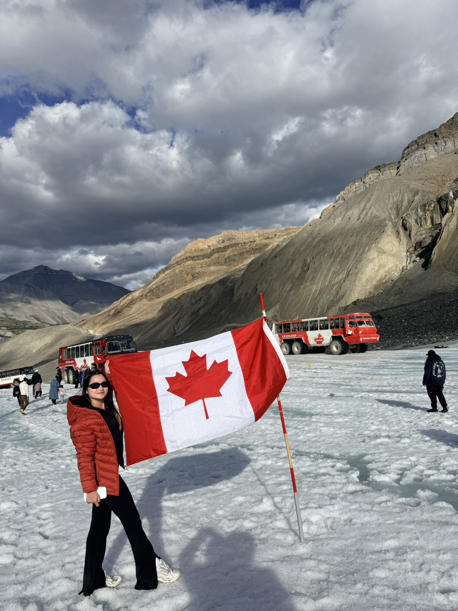

Go to the bottom of the page
Every Chapter Has Shaped ME
By: Missy Nacario

One of the hardest lessons I have learned is that not everyone we trust will treat our trust
the way we hoped they would. Throughout my life, I have experienced disappointments in
friendships and relationships. There were people I trusted deeply, people I believed would
always be there, and situations that made me question whether trusting people was worth it.
When someone disappoints you, it is easy to build walls around your heart. It is easy to tell
yourself, “I should never trust anyone again.” I have felt that way many times.
But I am slowly learning that someones inability to value me does not mean I was
foolish for caring. My kindness was not a weakness. My trust was not something to be ashamed
of. The fact that I loved people sincerely was never the problem. The lesson is simply that trust
should be earned, and I can love people while still learning to protect my own peace.
I am also learning that happiness cannot depend entirely on other people. People can
come into our lives and leave. Some stay for years, while others stay only long enough to teach
us something. Some relationships survive distance and change, while others do not. And that is
painful. But perhaps growing up means accepting that not every relationship is meant to last
forever. Some people are part of a chapter, not the entire story. That does not make the memories
meaningless. It simply means that life continues to write new pages.
I am also learning that happiness cannot depend entirely on other people. People can
come into our lives and leave. Some stay for years, while others stay only long enough to teach
us something. Some relationships survive distance and change, while others do not. And that is
painful. But perhaps growing up means accepting that not every relationship is meant to last
forever. Some people are part of a chapter, not the entire story. That does not make the memories
meaningless. It simply means that life continues to write new pages.
Now I am studying software development in Canada, stepping into another unfamiliar
chapter of my life. There are days when I feel excited about what I might become, and there are
days when I feel overwhelmed by everything I have to learn. Sometimes I wonder whether I am
capable of finishing what I started. There are moments when school, work, finances, and
adjusting to a new country feel like too much at once. But then I remember the girl who left the
Philippines at eighteen. I remember the girl who moved to Taiwan and learned to survive in a
different country. I remember the years of studying and working. I remember all the moments
when I was afraid but continued anyway. That girl has already survived so many things she once
thought she could not handle. So why should I believe that I cannot handle this chapter?
Maybe I do not need to know exactly how everything will turn out. Maybe I only need to
keep taking the next step. I do not need to have my entire future figured out today. I only need
enough courage for the part of the journey that is in front of me.
I have also learned that success is not always about reaching a destination as quickly as
possible. Sometimes success is simply refusing to give up when life becomes difficult. There are
days when my progress feels small. There are days when I compare myself to other people and
feel like I am behind. I see people who seem to have everything figured out, and I wonder why I
am still trying to understand my own life. But I have to remind myself that I cannot compare my
beginning to someone elses middle. Everyone has a different starting point. Everyone carries
different responsibilities, different struggles, and different stories that we cannot see. My journey
is mine.
This is my journey to happiness—not a perfect journey, not an easy journey, but mine. I
may not know exactly where the road will lead me, but I no longer need to know everything. For
the first time, I am learning to trust the journey itself. I will carry the memories of the places I
have been, the lessons from the people I have met, and the strength I gained from every
challenge. I will keep moving forward, not because I am certain that everything will be easy, but
because I believe that something beautiful can still be waiting for me.
And maybe, after everything I have been through, that is what happiness truly means: not
finding a perfect life, but finding the courage to keep living, keep dreaming, and keep choosing
hope. My story is not finished yet. This is only another chapter. And this time, I want to write it
with courage, with gratitude, and with the belief that no matter how difficult the journey
becomes, I will find my way back to myself—and eventually, to happiness.